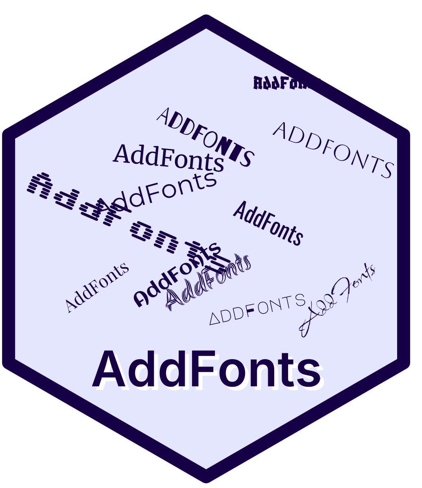

Package index
-
CacheEntry() - S7-backed cache entry (CacheEntry)
-
CacheEntryList() - S7 list of cache entries (CacheEntryList)
-
CacheMeta() - S7-backed cache metadata (CacheMeta)
-
FontProvider() - Font provider specification (FontProvider)
-
add_font() - Add a font to the local cache and register it for use
-
as_CacheEntryList() - Read from list
-
as_FontProvider() - Construct a
FontProviderfrom a named list -
as_list() - As list
-
cache_clean() - Clean cache entries
-
cache_get() - Get certain families from CacheEntryList
-
cache_get_weights() - Check which weights are available in a cache entry
-
cache_read() - Read cache entry from disk
-
cache_remove() - Delete entry from cache
-
cache_set() - Set cache entries
-
cache_ttf_filename() - Compose canonical filename for a cached TTF
-
cache_ttf_path() - Compute canonical cache path for a TTF file
-
cache_variant_paths() - Compute paths used for caching provider artifacts and any conversion intermediate files.
-
cache_write() - Write CacheEntryList to disk as JSON
-
conv_fun() - Resolve a conversion name to the converter function used by the package (currently only
woff2_to_ttf). -
delete_files() - Delete files
-
download_and_cache() - Download font variants and add to cache
-
download_variant_generic() - Download and (if needed) convert a provider artifact to a local TTF file for a given family/weight/style and return the local path.
-
download_weights() - Download font files for specified weights
-
get_cache_dir() - Get the package cache directory for fonts
-
get_provider_details() - Get provider details from internal data
-
preview_font() - Preview a font by ensuring it's installed and drawing a sample string
-
register_from_cache() - Validate a cache entry and register the font with sysfonts if the required files exist. Returns the prepared
fileslist orNULLwhen registration cannot proceed. -
register_from_download() - Download necessary variants for a font, write a cache entry and register the font with
sysfonts. Returns the preparedfileslist on success, orNULLif a regular font could not be obtained. -
safe_id() - Create a filesystem-safe id from a name
-
update_download_and_cache() - Download missing weights and update an existing cache entry
-
woff2_to_ttf() - Convert a .woff2 font to .ttf using the system 'woff2_decompress' tool